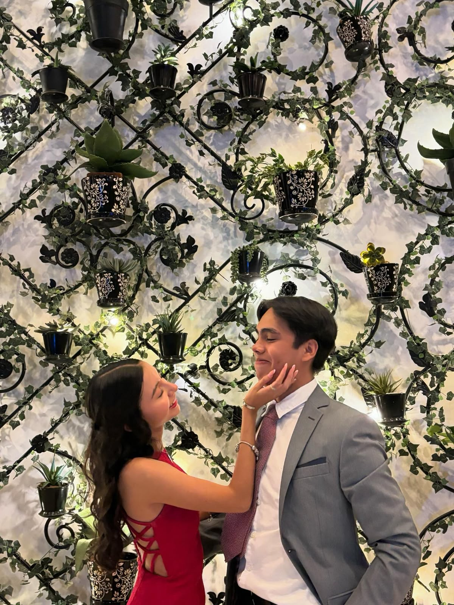
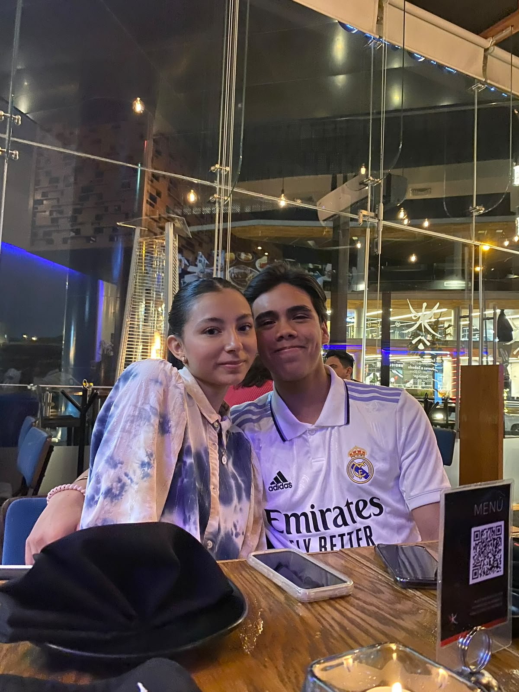
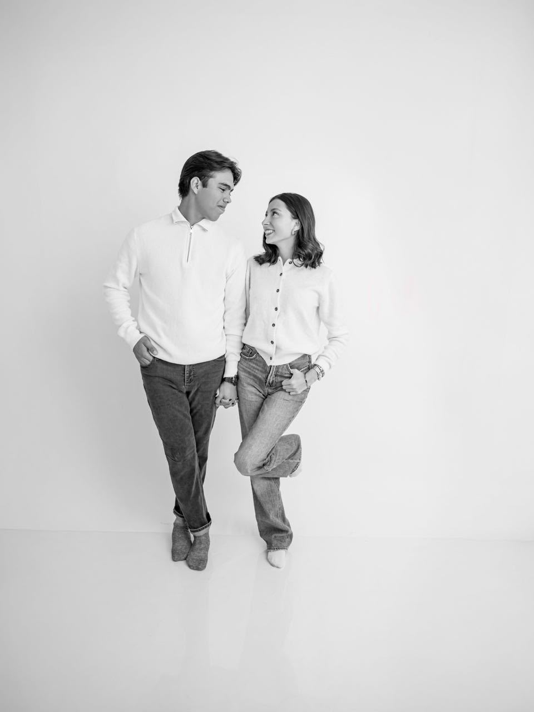

Donde todo se sentía más bonitoLo que guardo
Tú y yo fuimos muchos instantes que todavía me hacen sonreír.
No todo cabe en palabras. A veces una foto, una risa o un lugar dicen mucho más. Gracias por cada momento y por la versión de mí que conociste.
“Si pudiera volver a elegir un recuerdo, elegiría cualquiera en el que estés tú.”
— Con cariño, siempre
Las risas que sí se quedan
Dos personas, una historia inolvidable02
Pequeñas verdades
Cosas que nunca quiero olvidar de ti
Nuestros capítulos
20 recuerdos.
Una sola historia.
Toca una foto para verla completa.
01 / 20
03
Un día a la vez
¿Le damos una oportunidad a diciembre?
No quiero adelantar el tiempo, solo tener algo bonito que esperar. Este contador termina cuando comienza diciembre.
00días
:
00horas
:
00min
:
00seg
Lo más importante
Una carta para ti
No sé qué vaya a pasar después de hoy, pero sí sé que lo nuestro significó mucho para mí. Te extraño sin querer borrar el pasado y te pienso sin querer presionar tu presente.
Si alguna vez volvemos a coincidir, me gustaría hacerlo desde un lugar más sincero, más tranquilo y más bonito. No prometo perfección; prometo intención, escucha y respeto.
Y si tu respuesta es distinta a la que deseo, también la voy a respetar. Porque quererte bien incluye respetar lo que tú necesitas.
Con todo mi corazón,
alguien que aún te recuerda bonito.
alguien que aún te recuerda bonito.
Sin presión. Solo una pregunta sincera.
¿Aceptarías salir conmigo una vez más?
Un café, una comida o una caminata. Tú eliges el plan, el lugar y el ritmo.